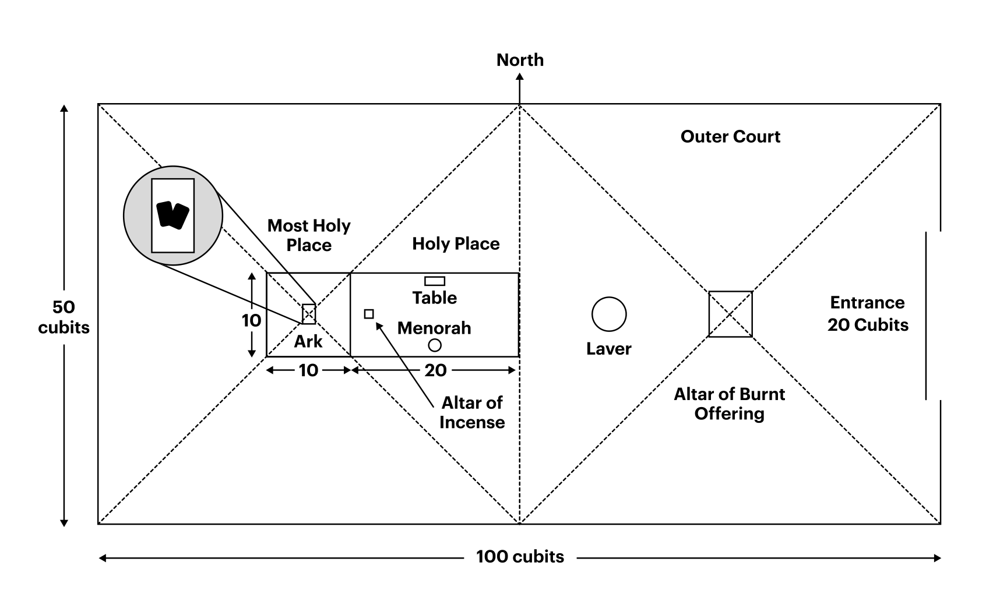

15 When Moses went up on the mountain, the cloud covered it, 16 and the glory of the LORD settled on Mount Sinai. For six days the cloud covered the mountain, and on the seventh day the LORD called to Moses from within the cloud. 17 To the Israelites the glory of the LORD looked like a consuming fire on top of the mountain. 18 Then Moses entered the cloud as he went on up the mountain. And he stayed on the mountain forty days and forty nights. We gain theological insight when we pay attention to the elapse of time on the mountain. During this time of testing in the wilderness (40 days/nights ≈ 40 years), God does a new work of creation (six days), and he invites his people into sabbath rest (seventh day) by which he lives among them again. 15 Quando Moisés subiu ao monte, a nuvem o cobriu; 16 e a glória do SENHOR pousou sobre o monte Sinai. Por seis dias a nuvem cobriu o monte, e no sétimo dia o SENHOR chamou Moisés do meio da nuvem. 17 Para os israelitas, a glória do SENHOR parecia um fogo consumidor no topo do monte. 18 Então Moisés entrou na nuvem enquanto subia o monte. E permaneceu no monte quarenta dias e quarenta noites. Obtemos insight teológico quando prestamos atenção ao tempo decorrido no monte. Durante esse tempo de provação no deserto (40 dias/noites ≈ 40 anos), Deus realiza uma nova obra de criação (seis dias), e convida seu povo ao descanso sabático (sétimo dia), pelo qual ele volta a habitar entre eles.
The tabernacle instructions recall Genesis 1-3 imagery and themes. As instruções do tabernáculo recordam imagens e temas de Gênesis 1-3.
YHWH’s instructions are presented as seven speeches (Exod. 25-31). As instruções de YHWH são apresentadas como sete discursos (Êxodo 25-31).
1. Tabernacle and furnishings (Exod. 25:1-30:10) 2. Atonement money (Exod. 30:11-16) 3. Wash basin (Exod. 30:17-21) 4. Anointing oil (Exod. 30:22-33) 5. Incense recipe (Exod. 30:34-38) 6. Appointing Bezalel and Oholiab (Exod. 31:1-11) 7. Sabbath (Exod. 31:12-17) 1. Tabernáculo e utensílios (Êxodo 25:1-30:10) 2. Dinheiro da expiação (Êxodo 30:11-16) 3. Bacia de lavar (Êxodo 30:17-21) 4. Óleo da unção (Êxodo 30:22-33) 5. Receita do incenso (Êxodo 30:34-38) 6. Nomeação de Bezalel e Ooliabe (Êxodo 31:1-11) 7. Sábado (Êxodo 31:12-17)
The two objects that take up the most narrative space, where the biblical author slows down to provide exquisite details, are the ark of the covenant and the breastplate of the high priest. Os dois objetos que ocupam mais espaço narrativo — onde o autor bíblico desacelera para oferecer detalhes primorosos — são a arca da aliança e o peitoral do sumo sacerdote.

Tabernacle Dimensions and Layout. Diagram by Danny Imes. Imes, Carmen Joy (2018). Bearing YHWH’s Name at Sinai. Eisenbrauns. 125. Dimensões e Layout do Tabernáculo. Diagrama de Danny Imes. Imes, Carmen Joy (2018). Bearing YHWH’s Name at Sinai. Eisenbrauns. 125.
The outside curtains are white, with the east-west axis using the most elaborate fabrics. The expense and beauty of materials increase as you approach the most holy place. As cortinas externas são brancas, e o eixo leste-oeste usa os tecidos mais elaborados. O custo e a beleza dos materiais aumentam à medida que se aproxima do lugar santíssimo.
Reflect on the connection between the tabernacle and creation/garden imagery. What shared themes do you notice? What is the significance of this connection? Reflita sobre a conexão entre o tabernáculo e as imagens de criação/jardim. Quais temas compartilhados você percebe? Qual é o significado dessa conexão?